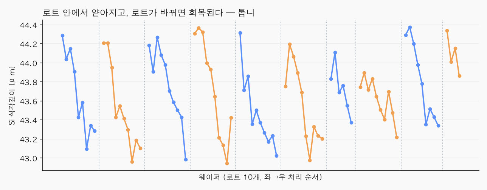
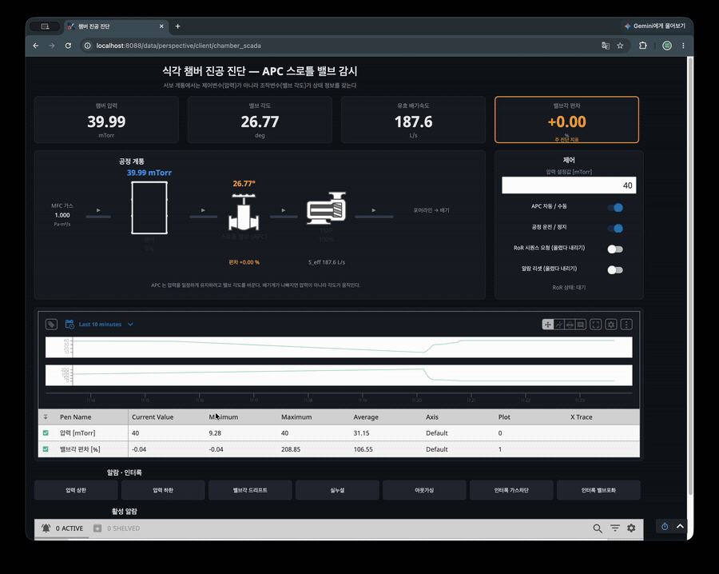
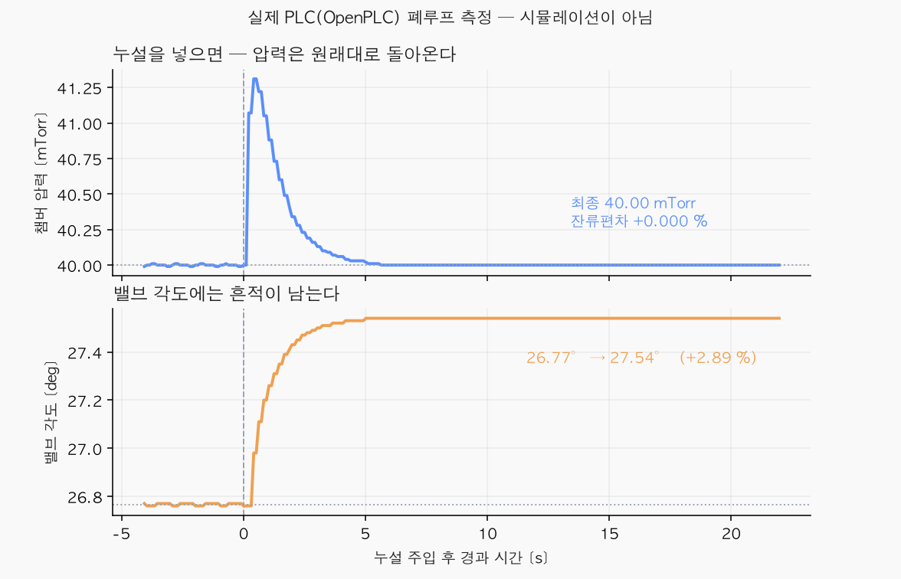
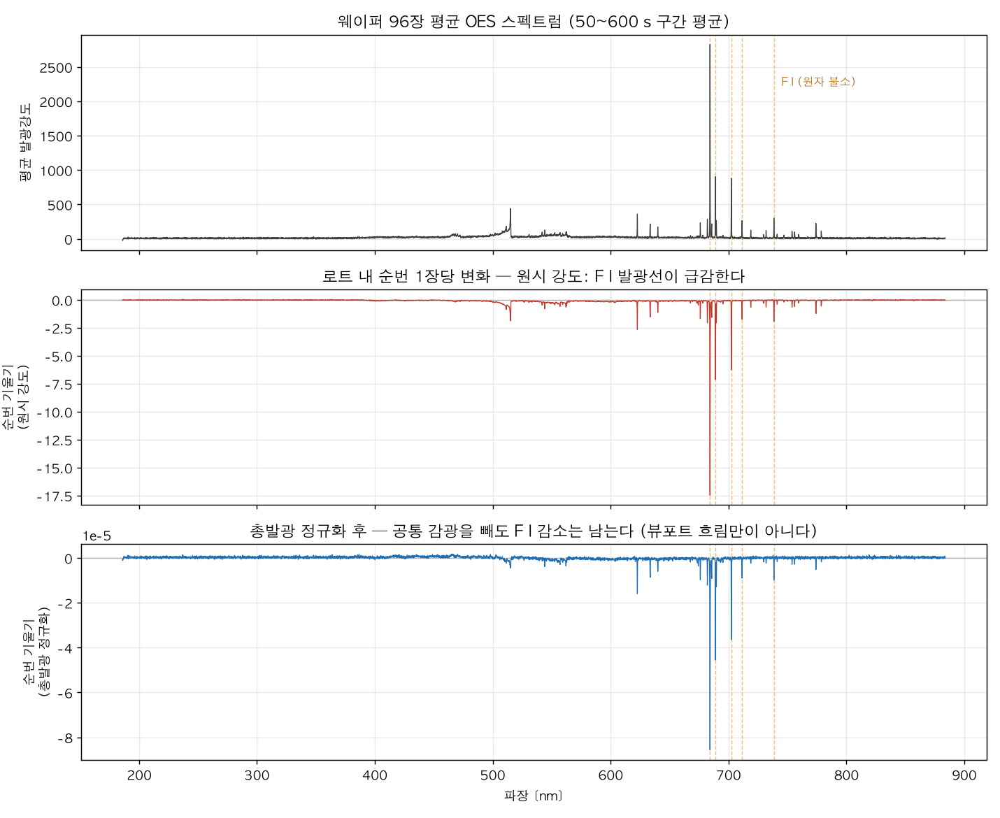

1 · 문제와 발견
공개 실측 데이터(웨이퍼 96장, 두 달)를 보다가 규칙적인 패턴을 발견했다. 한 로트(10장) 안에서 뒤로 갈수록 식각 깊이가 얕아지고, 다음 로트가 시작되면 원래대로 돌아온다. 10장에 2.72 % 얕아지며, 우연으로 보기 어려운 수준이었다.

이 데이터는 원래 세정 횟수의 영향을 보려고 공개된 것인데, 원 저자들은 “세정 조건 자체의 영향에 대해서는 뚜렷한 추세를 확립하지 못했다”고 적었다. 나는 같은 데이터에 “한 로트 안에서 장수가 쌓이면 어떻게 되는가”라는 다른 질문을 던졌다.
2 · 가설과 기각
배기가 막히면 압력이 오를 것이라 보았다. 확인해보니 압력은 변동계수 0.03 %로 사실상 상수였다. 자동압력제어(APC)가 붙들고 있었다.
배기 속도는 가스량 ÷ 압력이다. 가스량은 레시피가 정하고 압력은 상수였다. 분자도 분모도 안 변하니 그 몫에도 정보가 없었다.
로트마다 리셋되는 톱니를 찾았다. 배기계에 뭔가 쌓였다 없어진다는 것과 부합했지만, 식각 깊이가 얕아지는 것은 설명하지 못했다.
다중비교 보정과 함께 전부 조사했다. 설명하는 채널은 하나도 없었다.
압력이 일정한 것은 정보가 없어서가 아니라, 제어기가 계속 보정하고 있기 때문이다. 크루즈 컨트롤을 켜고 오르막을 오르면 속도계는 그대로지만 액셀은 더 밟힌다. 그렇다면 정보는 제어 결과(압력)가 아니라 제어 수단(배기 밸브 각도)에 남아 있어야 한다. 그런데 그 값은 데이터에 기록돼 있지 않았다.
| 평지 | 오르막 | |
|---|---|---|
| 속도계 (= 챔버 압력) | 100 km/h | 100 km/h |
| 액셀 개도 (= 밸브 각도) | 20 % | 35 % |
3 · 디지털 트윈
진공 배기 방정식으로 챔버를 재현하고, 압력과 가스량으로부터 밸브 각도를 역산하는 시뮬레이터를 만들었다. 실측 압력 재현 오차가 고정 배기속도 모델 34.8 % → APC 모델 8.2 %로 줄었고, 96장 전부에서 APC 모델이 우세했다. 즉 실제 장비에 APC가 걸려 있다는 것이 데이터로 확인되었다.
4 · PLC · SCADA 연동
제어 로직을 IEC 61131-3 구조화 텍스트(ST)로 다시 작성해 실제 PLC 런타임에 올리고, 물리 모델과는 완전히 분리된 별도 프로세스로 통신(Modbus TCP)만으로 연결했다.

설정값을 40 → 30 mTorr로 바꾸자 밸브가 열리며 압력이 따라 내려가고, 밸브각 편차 알람이 점등된다. 실제 PLC가 제어하는 화면이다.

| 압력 | 40.00 mTorr로 완전 복귀 (잔류편차 0.000 %) |
| 밸브 각도 | 26.77° → 27.54°로 이동한 채 남음 (+2.89 %) |
| 손으로 푼 해석해 | 27.5411° — 실측과 오차 0.00 % |
| 정정 시간 | 4.07초 (사전 예측 4.1초) |
압력만 보면 아무 일도 없었다. 고장은 밸브 각도에만 남았다.
5 · OES 분석
범위 밖으로 두었던 광학 발광 분광 데이터 7.9 GB를 열었다. 실리콘을 깎는 물질인 원자 불소(F)의 발광이 로트 안에서 10장당 6~12 % 어두워지고, 로트가 바뀌면 회복되었다.

웨이퍼 순번을 통계적으로 통제하고도 상관이 남아(r = 0.42), 장수를 세는 대신 실시간으로 측정 가능한 지표가 될 수 있음을 확인했다. 다만 식각 깊이 변화의 42 %만 설명하고 나머지는 밝히지 못했다.
6 · 한계
- 밸브 각도를 실측으로 검증하지 못했다. 데이터에 없어서 물리식으로 역산했고, 트윈과 실제 PLC 안에서만 확인했다.
- “밸브각이 임계를 넘으면 식각이 얕아진다”는 증명되지 않았다. 물리 기반 가설이며, 검증하려면 밸브각 로그와 식각 깊이가 함께 기록된 데이터가 필요하다.
- OES로도 42 %만 설명된다. 기준 발광선이 없어 밝기를 농도로 환산할 수도 없다.
- 청소 효과와 웜업을 분리하지 못했다. 로트 경계가 날짜 경계와 겹친다.
- PLC 장시간 안정성 미검증. 약 71분 후 런타임 워치독이 걸려 멈춘 사례가 있다.
음성 결과를 그대로 실었다. 첫 접근은 검증 게이트 실패였고, 전수 조사 결론은 “설명하는 변수 없음”이었다. 그 실패가 이후 작업의 이유다.